第1课时｜45分钟
女装设计 · 第04周
第04周｜主题板与设计任务书
主题板组织证据，设计任务书做出承诺。 把第03周的摩擦证据与 27 格压缩成一页可执行方向。
证据筛选 → 主题板 → 概念句 → 设计任务书 → Gate 1
一个学生的板→台：同一条线 Yulu Hou｜板上四页 → 台上一套
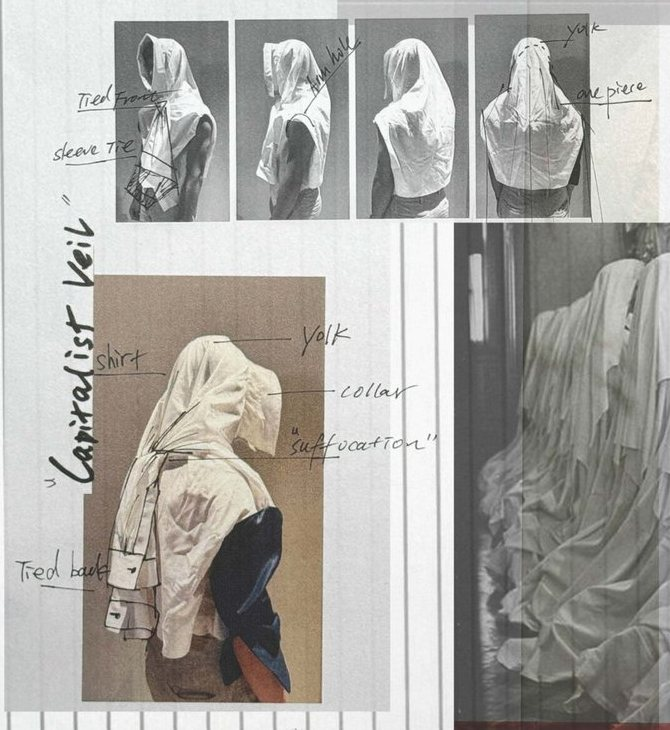
板① 衬衫→头 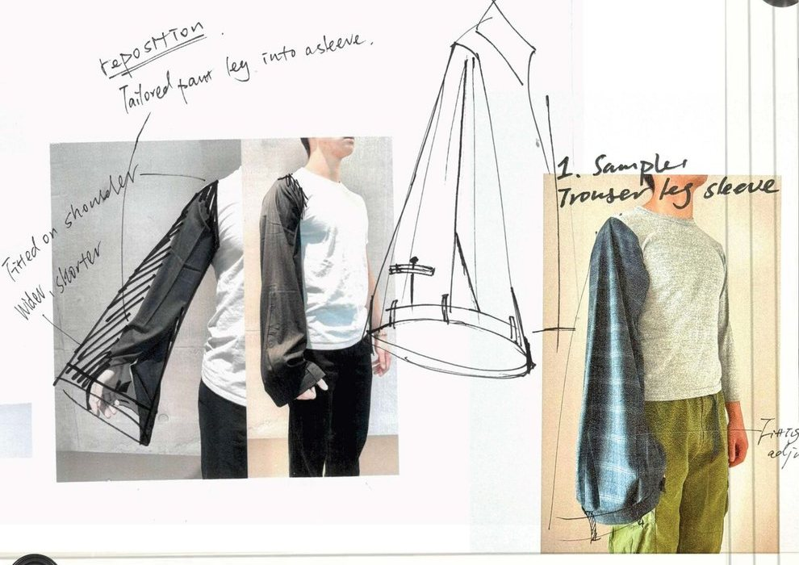
板② 裤腿→袖 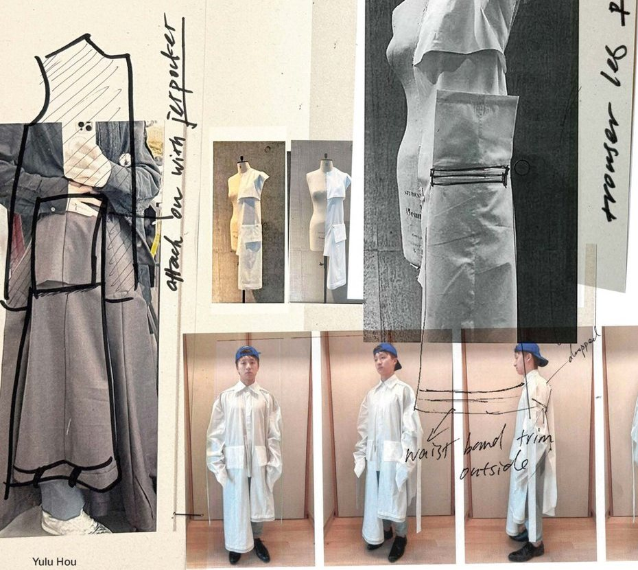
板③ 裤腿→身前 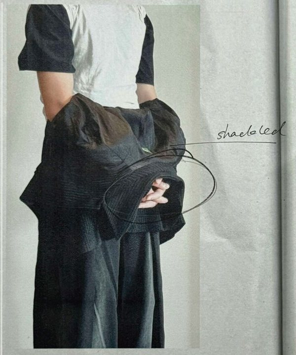
板④ 袖→手 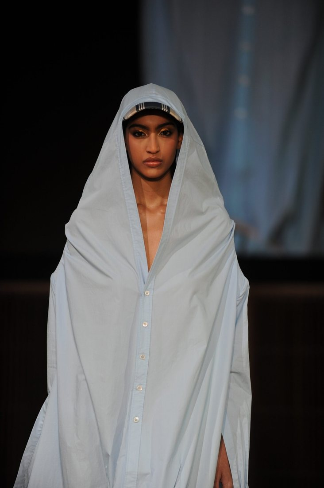
台上 图：1 Granary《LCF MA Fashion 2026: The Body Under Pressure》（2026.2.21），过程图随文发布｜仅课堂研究使用
十六周课程路径 女装设计 · 第04周
十六周不是孤立主题，而是一条连续的设计证据链 前8周建立方法并完成中期验证；后8周深化春夏与秋冬系列，最终独立完成主题系列与答辩。
01–04 判断与定位
03
平时作业 1｜03–04周做 灵感与主题板面 15分 风格·主题·发散 05–08 提取与验证
06
平时作业 2｜06周做 元素拆解板面 15分 元素变形·分解板 07
作业 2 截止 平时作业 3｜07–09周做 春夏系列开发 15分 春夏系列策划 V1 09–12 季节系列开发
10
作业 3 截止 平时作业 4｜10–12周做 秋冬系列开发 15分 秋冬系列概念与外套主线 13–16 独立项目与考核
13
作业 4 截止 自定主题：独立方法调用与首次提案 平时作业 4 次（各 15 分） 做：03–04 · 06 · 07–09 · 10–12 交：05 · 07 · 10 · 13
第1课时｜45分钟
女装设计 · 第04周
02 学习目标
今天要完成一页主题板和一页设计任务书 目标不是“听懂”，而是交出四项能够当场检查的设计证据。
筛选 20 → 8—12张 把第03周带来的 20 张 已标注资料，筛出会改变轮廓、材料或使用判断的 8—12 张 。
达成证据：每张图都能回答“为什么保留？”
组织 建立1条因果线 把人物、情境、矛盾与形式线索按逻辑连接。
达成证据：能从任一形式追溯到来源。
承诺 45字 + 8项任务书 说明为谁、在何种条件下、以什么策略解决什么。
达成证据：概念句与任务书使用同一组关键词；任务书的「形」写得出风格 检验语「在___↔___轴上取___一侧」（第03周第06页） 。
边界 4条边界（各写排除）+ 1项验证 明确本阶段排除什么，以及下一步如何检查成立。
达成证据：写出样布、款式图或标注方法。
第1课时节奏 开场 3′ 板与句 2′ 一条线·三个案例 9′ 实操七步 31′
学情 大二，已完成第01—03周，多数能做出发散板 9 格；27 格与自穿记录的完成率待第04周开场确认。当前三个普遍困难：资料多但说不出“为什么保留”；概念句写成形容词堆叠；边界只写“想做什么”，不写“不做什么”。 教学重点 把发散板的证据压缩成 45 字概念句，并让八项任务书与证据编号一一对应。 教学难点 写出“排除什么”——学生倾向于保留所有可能性，导致下一周无法开始元素提取。
第1课时｜45分钟
女装设计 · 第04周
03 上周→本周
今天不从零开始——上周那 27 格，就是今天主题板的骨架 第03周回答“这条线为谁存在”；本周回答“因此我承诺做什么”。
上周发散板上的
今天变成
在哪一页用
人物句 ＋自穿记录·观察速写第03周第14、25页
主题板“人物”层
主题板结构
事实句 ＋问题句 ＋身体句第03周第14页四句链
主题板“场景”“问题”层
主题板结构
当季趋势 1 条 ：5 个品牌里重复的一件事第03周第25页
主题板“时事”层
主题板结构
立场句第三级 ＋27 格里连出的那条线第03周第04、25页
设计任务书的“题”“形”“验”
设计任务书八项
20 张图＋来源卡 2 张＋实物 ≥2 件第03周第25页——能不能拿到，决定能不能做
任务书的“品”——产品与系列范围
开发边界
立场句第四次升级 （前三级：身体关系 → 结构线 → 因果句）第03周“因为______在______会______，所以这条线必须______” → 本周压成一句45字概念句：为［对象］，在［情境］中，通过［形式／材料策略］解决［核心矛盾］。
开场 3 分钟 确认第03周发散板 27 格 与八格证据、第02周那张 A3 在桌上（第03周不单独提交） → 匿名读 2 份第03周一句话小结并点评 → 摊开发散板与 20 张已标注图，今天全程使用。先举手 ：自穿记录（2 小时 5 个时刻，或三个动作 3 张）做了吗？没做的，第2步「人物」块先用观察速写＋人物句（第03周第14页） 顶上，第05周前补。本课不做访谈 （第03周附录 A04） ；未经本人同意拍摄的他人照片不进本周提交件。
课后查阅｜教学补充
女装设计 · 第04周
A02 板的职责
主题板不是情绪板，设计任务书也不是长篇说明 一个负责建立视觉论证，一个负责锁定行动。
主题板 呈现人物、场景、问题与形式线索 图片带来源与标注 看得见证据之间的关系 检验： 随手指板上一张图，你能说出它和旁边那张的关系吗？说不出就还是拼贴。
设计任务书 写出设计问题与标准 限定产品、材料与开发边界 决定下一步实验和评价方法 检验： 别人拿着它，能不能判断你下一步该做什么？判断不出就还是说明文。
常见错误 主题板做成好看的拼贴（图之间没有关系），设计任务书写成长篇说明（没有边界和标准）。 体量参考 两者加起来不超过一张 A3 和一页文字——写不下，通常说明还没有决定。
第1课时｜45分钟
女装设计 · 第04周
04 主题板结构
一页主题板包含五层相互指向的证据 贯穿示范用第03周那颗种子 （早课 8:40，上楼梯时裙摆卷进鞋跟）：图片总量仍控制在 8—12 张，但每一张必须承担不同职责。
01 / 人物 人物 谁的身体、身份与审美需要被优先处理？
本案例证据 一个赶早课、还要拎着电脑包爬到四楼的学生（第03周第14页人物句） 。
02 / 场景 场景 她在何时、何地，以什么动作转换角色？
本案例证据 8:40 的楼梯间，一次抬腿上两级（第03周第14页事实句） 。
03 / 问题 问题 两种需求在哪里冲突，必须由服装验证？
本案例证据 同一道下摆，要收（不缠鞋跟）又要放（迈得开）——抬脚上一级时怎么同时做到？
04 / 形式 形式 哪种轮廓或材料原理能够回应前述证据？
本案例证据 那一条线：下摆抬腿时让开、放下时回来（第3步从 27 格连出；种子见第03周第04页：“把下摆抬到膝下”）。
05 / 时事 时事 什么当代变化让这个问题在今天成立？
本案例证据 当季 5 个品牌里重复的一件事：及踝长裙回潮 ——裙子一长，楼梯上缠鞋跟的情况就多了（写法同第03周第13页⑦）。品牌与季度必须标来源。
证据检验 删除任何一层后，如果设计决定完全不变，该层仍只是装饰资料。
第1课时｜45分钟
女装设计 · 第04周
05 概念句
45字以内：条件、矛盾与策略必须同时出现 继续使用上一页“主题板结构”的案例，把五层证据压缩成能够指导设计的句子。
对象 赶早课爬四楼的学生
情境 上楼梯抬腿的那一刻
矛盾 下摆要收（不缠鞋跟）↔ 下摆要放（迈得开）
策略 抬腿让开、放下回来的膝下下摆
句式 为［对象］，在［情境］中，通过［形式／材料策略］解决［核心矛盾］。
空泛句｜无法执行 “设计一个优雅、未来、可持续的女性系列。”
只有形容词，无法决定轮廓、材料，也无法提出下一步实验。
可执行句｜可以验证 “为赶早课爬四楼的学生，在上楼梯抬腿时，用抬腿让开、放下回来的膝下下摆，解决下摆要收又要放的矛盾。”
四十三字（只数汉字和数字，标点不算）。对象、情境、矛盾与策略都在，而且每一样都能指回板上的编号。
能画 可转成轮廓／结构图
能做 可用样布或款式图验证
能排除 知道哪些选择不属于本系列
课后查阅｜教学补充
女装设计 · 第04周
A03 系列预读
Caroline Hu 2026秋冬｜先看五套结果，再反推系列规则 五套不是五个独立点子：先找出保持不变的设计密码，再观察体量、材料与身体距离如何改变强度。
Caroline Hu 2026秋冬 · Vogue Runway 同一季5套：结果观察 → 过程倒推
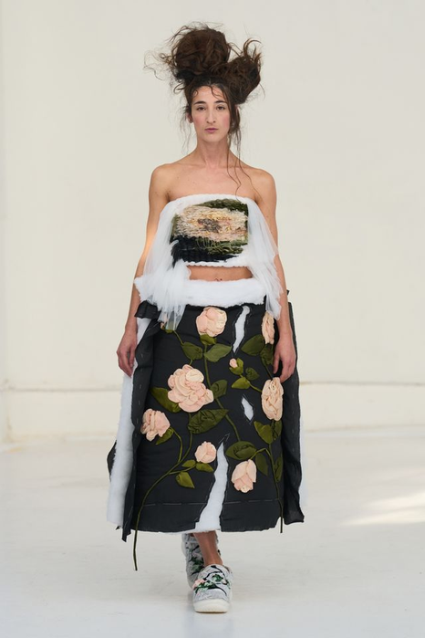
01 基准造型 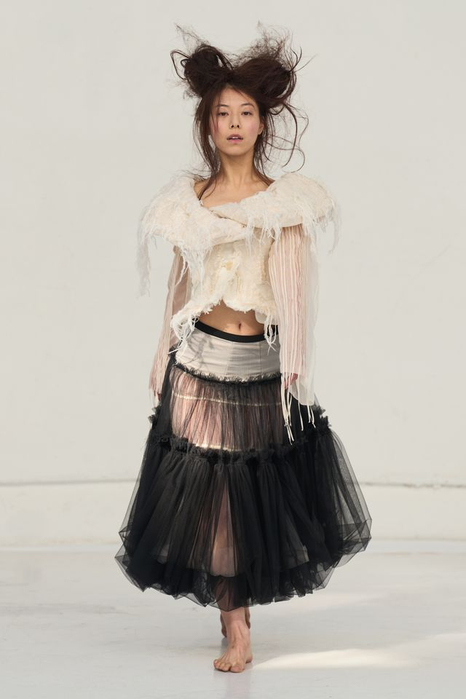
02 材料转折 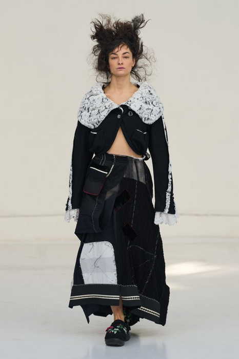
03 黑白反转 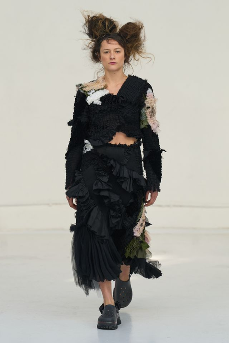
04 结构收束 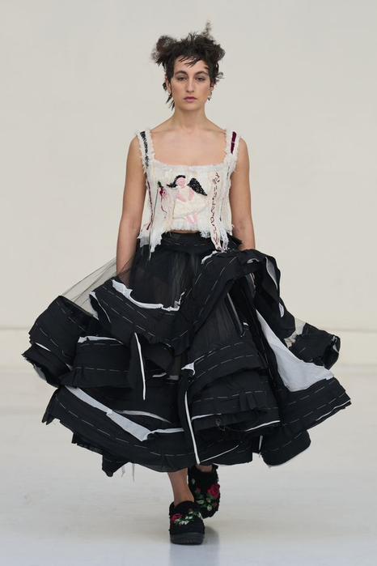
05 体量峰值 保持： 黑／白色域、薄纱与棉／蕾丝的材料冲突、受控的身体暴露。
变化： 层次密度、身体距离与体量峰值；从下一页起，用“主题板实例”倒推主题板、实验与成衣验证。
图源：Caroline Hu 2026秋冬成衣｜Vogue Runway｜用途：仅用于“先看结果、再反推系列规则”的观察
课后查阅｜教学补充
女装设计 · 第04周
A04 命题到工艺
院校实例｜《疏影问窗》怎样把“花窗的影子”变成面料工艺 公开报道给了命题、工艺和结果，没有公开主题板。先看命题怎样一步步落到面料上。
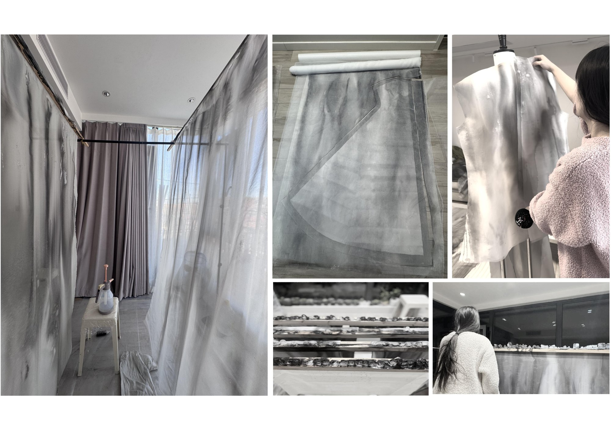
《疏影问窗》面料冰染过程（点击放大） 01 命题只抓一个现象 据报道 ：以“花窗影迹流转”为核心，取自苏州园林——抓的是影子，不是窗格图案。
02 “时间”交给冰染 据报道 ：用自然冰染做出时光流转的晕染。图上 ：长幅面料挂起晾染，冰块排在架上慢慢化。
03 “影”交给起绒 据报道 ：手工植绒与羊毛纤维起绒，做出影子柔软的肌理。
04 回到验证 报道说穿着者一走、观者一换角度，轮廓和肌理就变。你的面料小样能不能换光、换角度验证这一点？
图文：清华大学美术学院新闻（2026.4.8 发布）——面料冰染过程照片｜用途：仅用于“命题→工艺”链观察｜仅课堂研究使用｜访问 2026.10.2
课后查阅｜教学补充
女装设计 · 第04周
A05 效果到台上 ①
效果图左一套 → 台上：哪些留下了，哪些变了 同一份报道里的效果图和秀演照片，可以一套对一套地比。先比左边这一套。
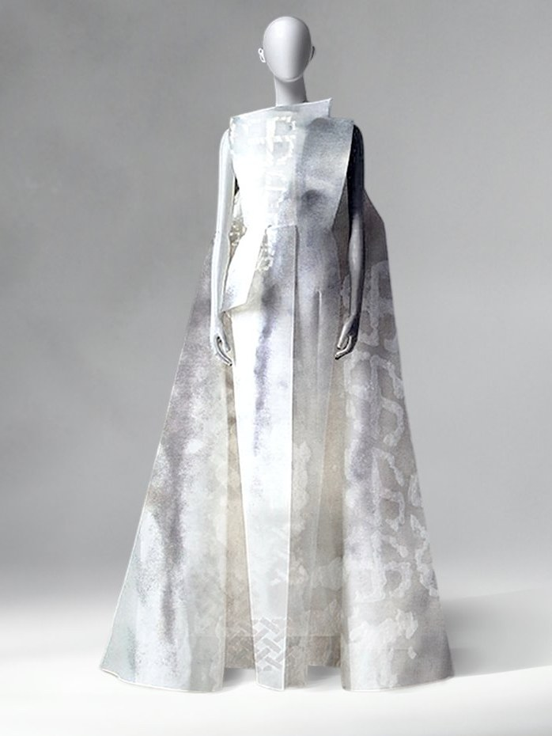
效果图｜左一套（点击放大） 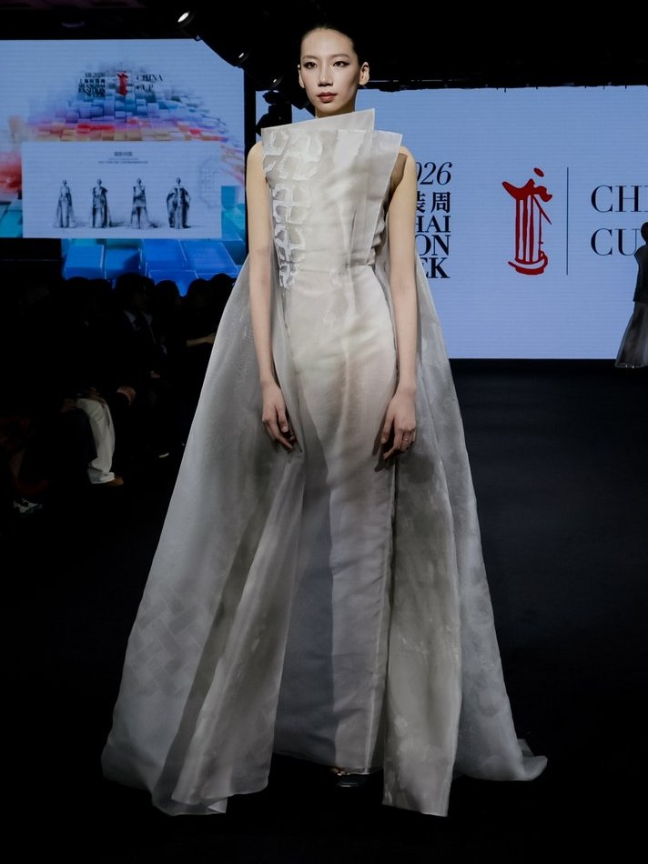
台上｜同一套（点击放大） 留下了 图上 ：竖起的高领片、左胸一列竖向镂空格纹、两侧长到地面的外层。
变了 图上 ：效果图里大片的灰色晕染，到台上变成半透明薄纱下的浅影。
怎么读 先找留下的，再找变了的。留下的就是这套的规则；变了的是做成实物时的取舍。
图文：清华大学美术学院新闻（2026.4.8 发布）——设计效果图与参赛秀演现场照片｜用途：仅用于“效果图→成衣”的对照观察｜仅课堂研究使用｜访问 2026.10.2
课后查阅｜教学补充
女装设计 · 第04周
A06 效果到台上 ②
效果图右一套 → 台上：同一条规则，换一种廓形 再比右边这一套。两套都在用“格纹＋晕染”，但放的位置和廓形不同。
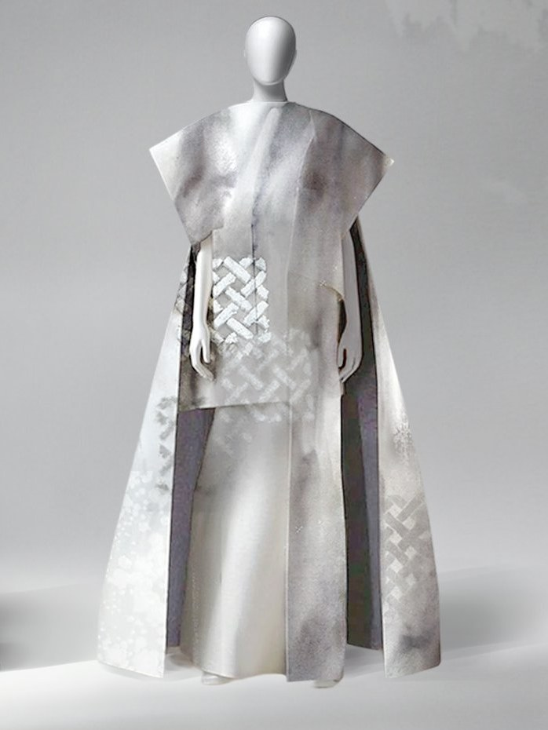
效果图｜右一套（点击放大） 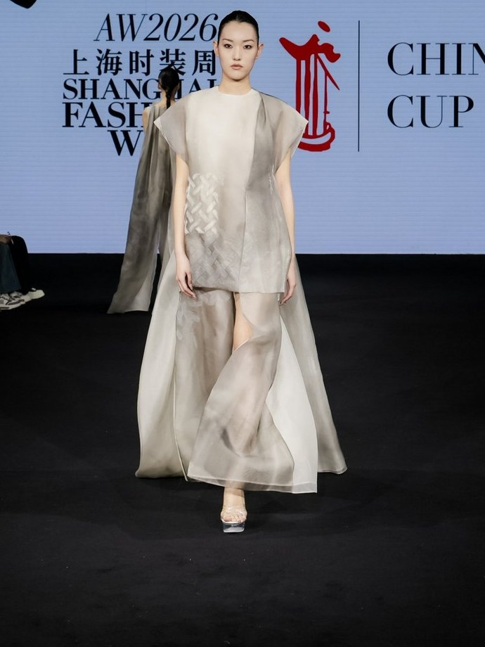
台上｜同一套（点击放大） 留下了 图上 ：平展的宽肩片、腰前一块编织状格纹、侧边一片灰色外层。
变了 图上 ：晕染从整身收到侧片和下摆；裙前多了一道开衩，走动时露出里层。
证据边界 报道公开了效果图两套和台上两套，没有公开主题板 。主题板那一格只能写“未公开”，不能替作者补。
回到你自己的主题板 你的公开证据能验证到哪一步？哪一步只能写“待验证”？
图文：清华大学美术学院新闻（2026.4.8 发布）——设计效果图与参赛秀演现场照片｜用途：仅用于公开证据可验证范围的判读；未公开部分不作推断｜仅课堂研究使用｜访问 2026.10.2
课后查阅｜教学补充
女装设计 · 第04周
A07 证据到规则
每条设计规则都要有来源 规则不是装饰偏好，而是重复出现的决策。
课后查阅｜教学补充
女装设计 · 第04周
A08 二次案例
第二个院校案例｜《有无相生》把废旧面料变成设计规则 一个硕士作品系列（清华大学美术学院）：据报道 以寄木细工为技术支点，把“无价值”的废旧面料转化为新的服装表面。
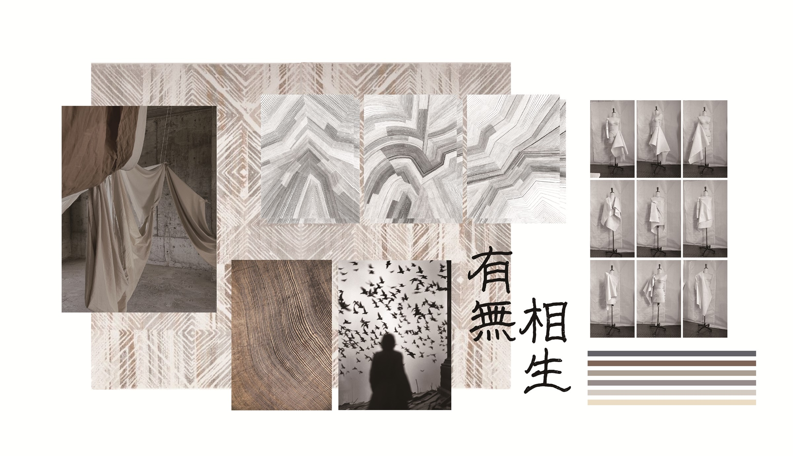
《有无相生》灵感版｜废旧面料、切片肌理与“有／无”命题（点击放大） 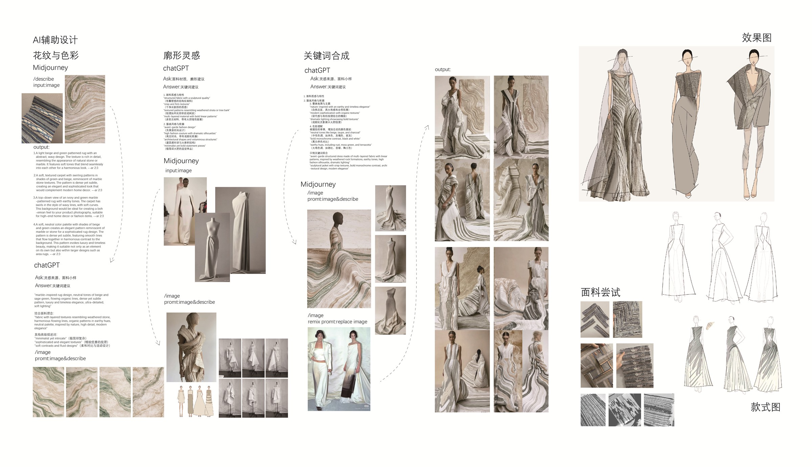
AI辅助流程与效果图｜材料实验、组合预演与系列方向 01 证据 记录废旧面料的层次、边缘、磨损与原有色差，而不是先画一件“环保风”服装。
02 技术支点 多层复合后切削成片，再把切片重新拼合，形成类似寄木细工的条带肌理。
03 设计规则 每套造型改变条带的方向、密度与覆盖面积，但保留“废料转为主表面”的原理。
04 AI边界 图上 ：板面写明 AI 用在花纹与色彩、廓形灵感、关键词合成 三处（第03周第08页核对过同样三处）；材料强度、厚度和缝制可行性仍必须由面料小样验证。布是作者的，词是 AI 的。
图文：清华大学美术学院新闻（2025.5.27 发布，事在 2025.5.20）——灵感版与 AI 辅助流程图｜用途：仅用于“材料原理→设计规则”的观察｜仅课堂研究使用｜访问 2026.9.17
课后查阅｜教学补充
女装设计 · 第04周
A09 材料到成衣
从材料规则到代表性成衣｜层叠、切片与斜向拼合如何进入轮廓 官方页面公开同一代表性造型的全身与近景。先检查材料原理是否真正控制结构，再评价视觉风格。
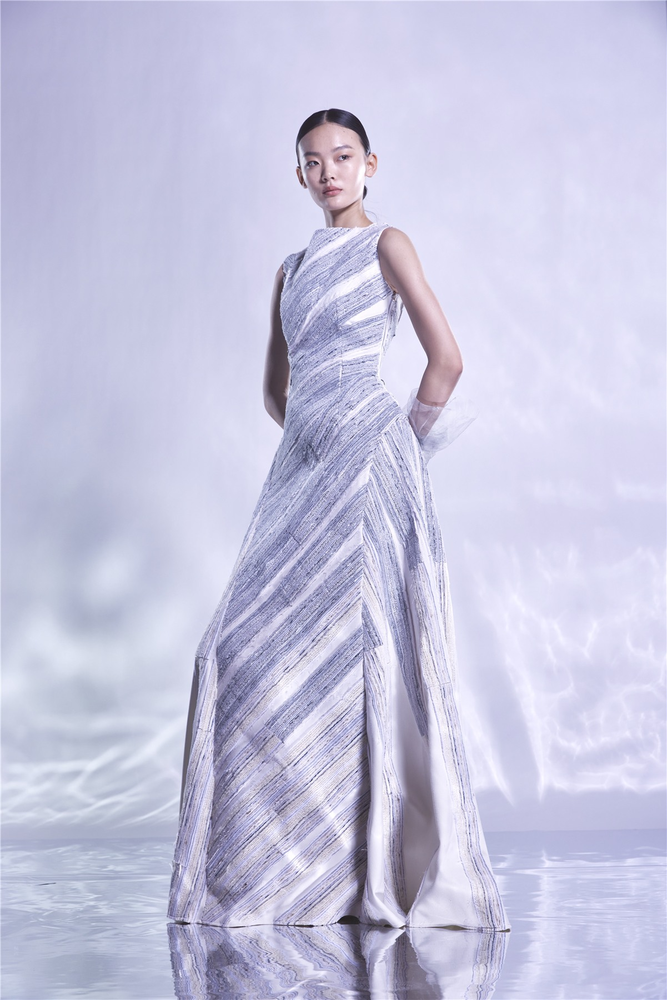
代表性成衣｜全身比例 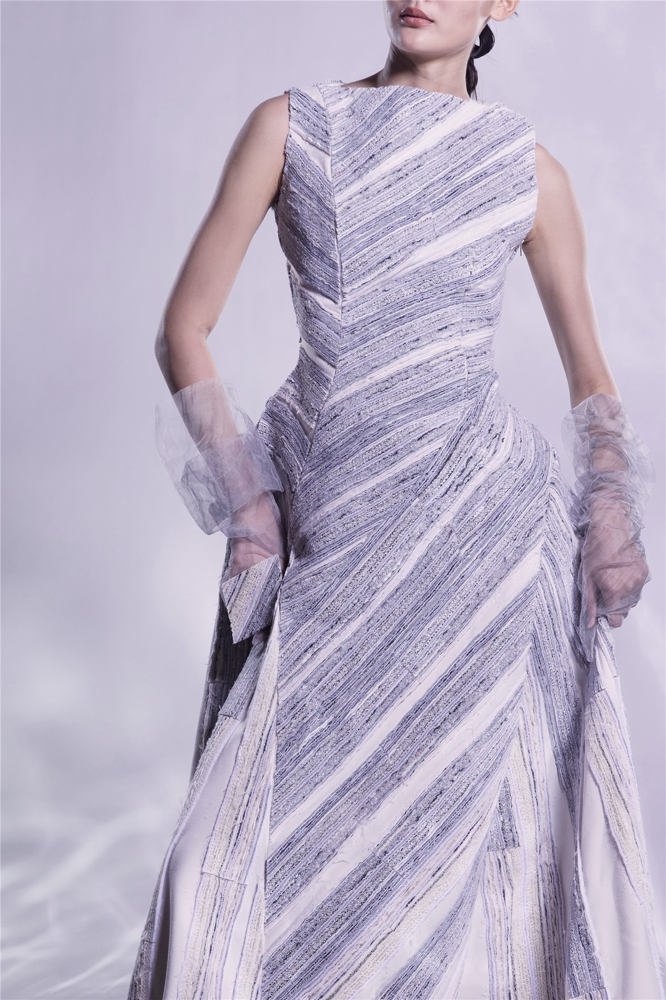
代表性成衣｜胸腰与裙身材料细节 斜向拼合控制视线 图上 ：条带从肩胸穿过腰部并延伸到裙身，把表面实验转成连续的结构方向。
密度变化形成层级 图上 ：胸腰区域压缩、裙摆区域释放，使同一肌理在身体不同部位呈现不同强度。
废料成为主体材料 据报道 ：再生表面承担轮廓、明暗与触感，不只是附加一个“可持续”装饰符号。
只陈述可验证范围 公开资料展示该代表性造型的全身与近景；其余系列方向以效果图为依据。
图文：清华大学美术学院新闻（2025.5.27 发布，事在 2025.5.20）——代表性成衣全身与近景｜用途：仅用于材料原理是否控制结构的判读｜仅课堂研究使用｜访问 2026.9.17
课后查阅｜教学补充
女装设计 · 第04周
A10 材料与责任
材料责任不是标签，而是一条可验证的决策链 继续观察《有无相生》：只有来源、物性、使用寿命与证据边界能被逐项说明，“可持续”命题才真正进入设计任务书。
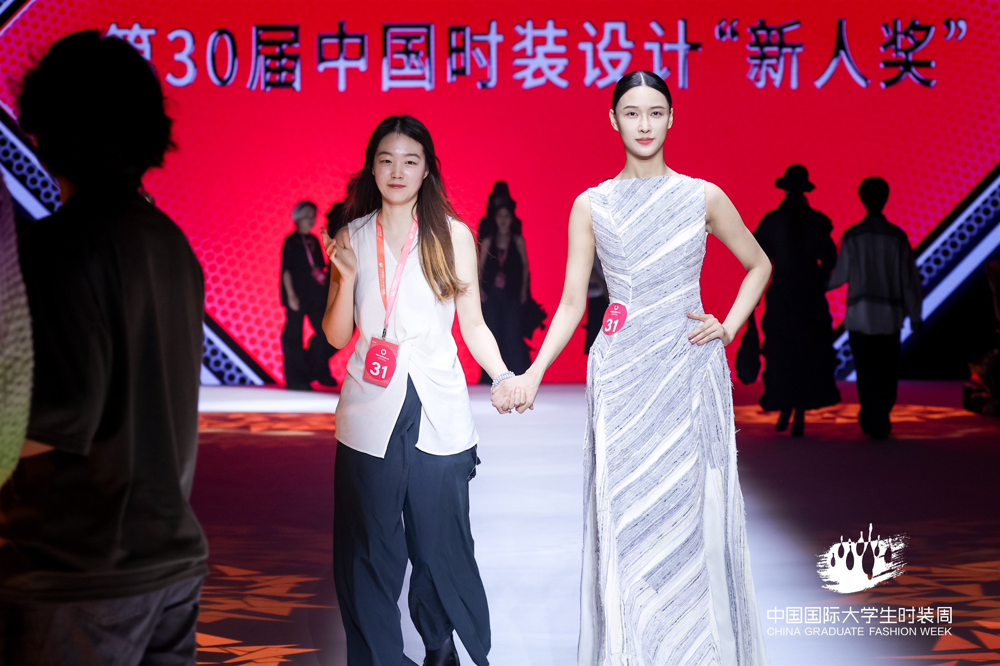
《有无相生》秀场展示｜清华大学美术学院新闻（2025.5.27） 01 来源与输入 记录旧料的种类、原用途、可用面积、损耗，以及必须补充的新料比例。
检查：什么被再利用？实际使用了多少？ 02 物性与工艺 比较复合、切片和拼合后的厚度、重量、垂坠、强度与边缘脱散。
检查：样布能否支撑预定轮廓？ 03 使用与寿命 通过穿脱、坐姿、抬臂、清洁和修补测试，判断成衣能否被长期重复使用。
检查：责任是否延伸到穿着与维护？ 04 证据与边界 只陈述来源记录、样布实验和标注能够证明的内容；没有数据时不写“零碳”。
检查：每个主张能否找到对应证据？ 学生提交｜材料护照 来源照片 1组 + 10—20cm 样布 3块 + 物性记录 + 使用与修补方案。
回到你自己的材料 来源、物性、寿命、边界四项里，你现在能写满几项？
图文：清华大学美术学院新闻（2025.5.27 发布，事在 2025.5.20）——秀场展示｜用途：仅用于材料责任决策链的观察｜仅课堂研究使用｜访问 2026.9.17
第1课时｜45分钟
女装设计 · 第04周
06 一格 → 一条线
上周说「收敛出一格」——其实要找的是一条线 一条线＝穿过好几格都在的那个做法。一格只是一件衣服；一条线才撑得起五套。 今天第3步就做这件事。
✗ 只挑一格? ? ? ? 得到的是一件衣服 。另外四套只能从头再想。
✓ 找一条线得到的是一个做法 ：五套的下摆都在做同一件事，只是程度不同。
这条线你见过｜第03周第04页立场句：「所以这条线 必须___」。第7步概念句里的「策略」 ，就从这条线来。
第1课时｜45分钟
女装设计 · 第04周
07 主题板要回答什么
主题板回答两件事：看起来像什么 ＋ 身体哪里、怎么做 附录 A02「板的职责」里写着：主题板不是情绪板。差别就在第二件事上。
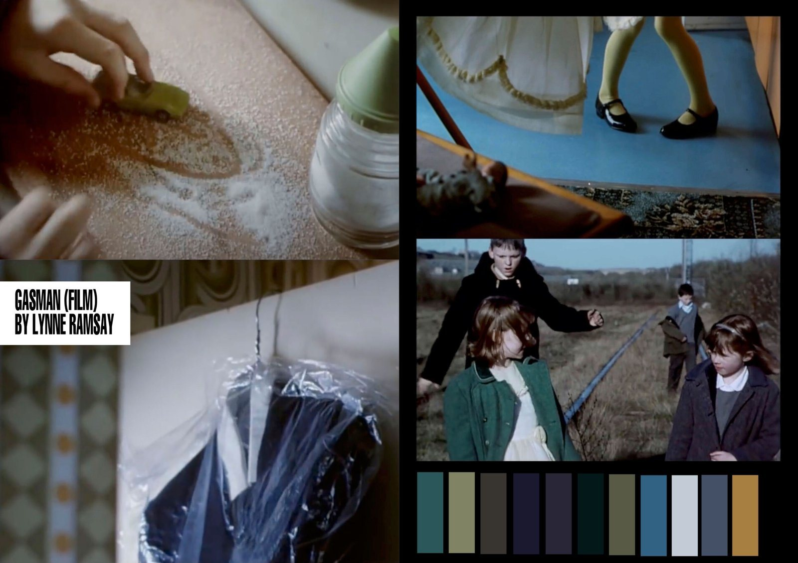
① 看起来像什么 一部电影的四个画面＋十一个色块：气氛、颜色、年代。Benaissa Majeri｜学生作品 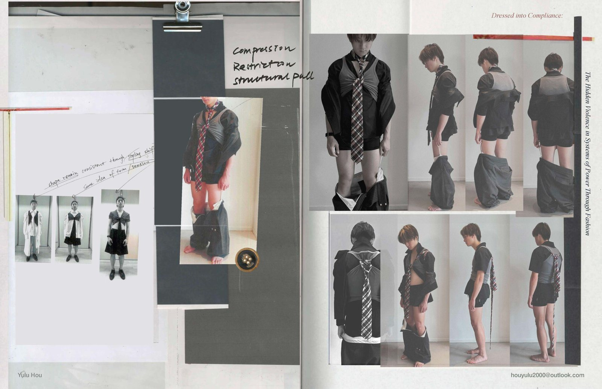
② 身体哪里、怎么做 同样是照片，旁边写着 compression · restriction · structural pull （压、限制、结构的拉力）。Yulu Hou｜学生作品 你的主题板｜①可以有，②必须有。 只有①，是一张好看的情绪板；有了②，才能往下做衣服。
图：1 Granary《CSM MA 2026》（左，2026.2.19）、《LCF MA Fashion 2026》（右，2026.2.21），过程图随文发布｜理念据同文，教师翻译｜仅课堂研究使用
第1课时｜45分钟
女装设计 · 第04周
08 真实的主题板
她在板上亲手写下了自己的「线」 左边三张试穿照片上面，两行手写字，箭头指着三套。
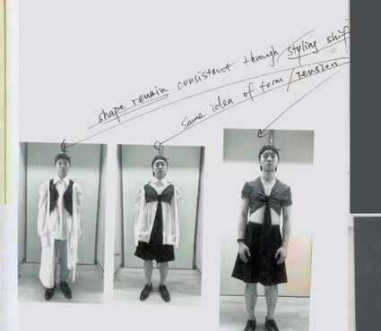
shape remain consistent through styling shift 形状没变
same idea of form / tension 同一个形、同一股拉力
三套的衬衫、下装都换了，胸前那一块深色的形 一直在。
这就是一条线：≥3 格里都在 ，换的是别的东西。
图：1 Granary《LCF MA Fashion 2026: The Body Under Pressure》（2026.2.21），过程图随文发布｜理念据同文，教师翻译｜仅课堂研究使用
第1课时｜45分钟
女装设计 · 第04周
09 案例① Yulu Hou · 板
同一个动作，她在板上做了四次 把制服的一块挪到身体别处 ，原来的领子、袖口、口袋都不拆。四页板，四个部位。
衬衫 → 头 Capitalist Veil ：领子、育克还在，衬衫罩住头，袖子绑到背后。裤腿 → 袖子 reposition: tailored pant leg into a sleeve ：西裤裤腿改成袖子，先做一只小样。裤腿 → 前片 trouser leg pocket 、waist band trim outside ：裤腿连口袋挂到身前，腰头露在外面。外套袖 → 手铐 shackled ：外套袖子缠住两只手。
她的线 保留「制服部件换位置，原结构不拆 」原理 —— 四页、四个部位，都是这一件事。
图：1 Granary《LCF MA Fashion 2026: The Body Under Pressure》（2026.2.21），过程图随文发布｜理念据同文，教师翻译｜仅课堂研究使用
第1课时｜45分钟
女装设计 · 第04周
10 案例① Yulu Hou · 上台
板上的格子，一格一格走上了台 左边是板上那一格，右边是台上的成衣。动作没变，程度变了 ：小样上是一件衬衫，台上是一整件罩袍。
→
衬衫罩头 台上：浅蓝衬衫从头顶罩到脚。袖子缠手 台上：两只手收在身前那团布里。裤腿挂到身前 台上：白色一片连腰头挂在外套下面。换成我们的格式｜这条线就是概念句里的「策略」。有了它，每一套都说得出 ：这一套挪的是哪一块。
图：1 Granary《LCF MA Fashion 2026: The Body Under Pressure》（2026.2.21），过程图随文发布｜理念据同文，教师翻译｜仅课堂研究使用
第1课时｜45分钟
女装设计 · 第04周
11 案例② Ivan Delogu Senes · 板
每张来源图旁边，他都贴了一张自己的试穿 左半是来源，右半是他的布样穿在身上。三对图，来源完全不同，却都是一个人像 ——他把人像身上的形，穿到自己身上。
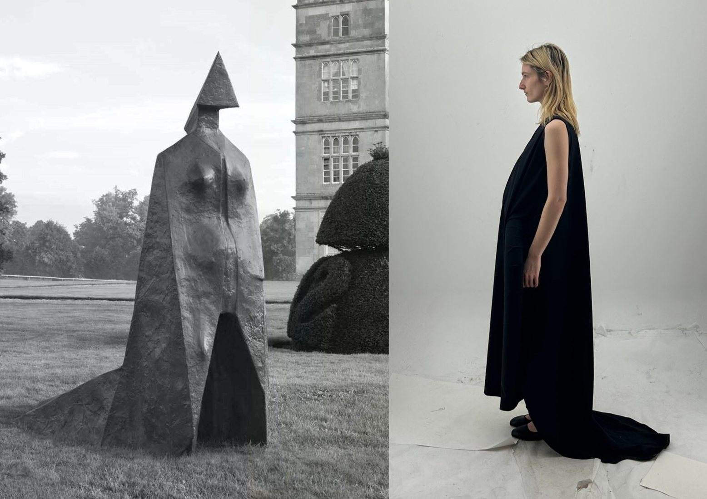
石像 → 长裙 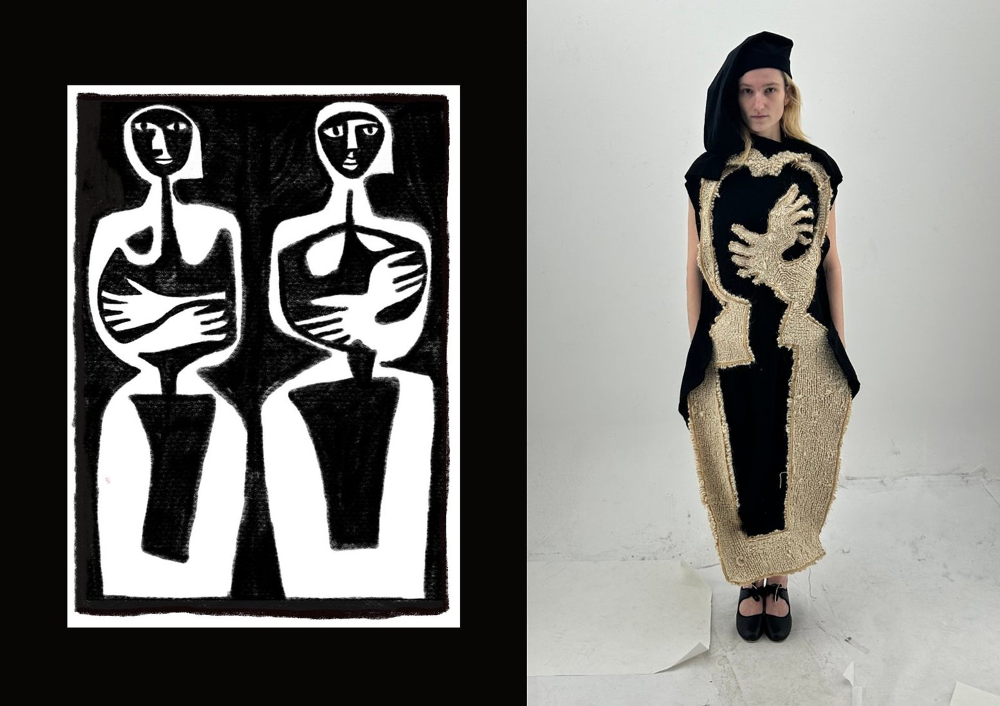
版画 → 贴布 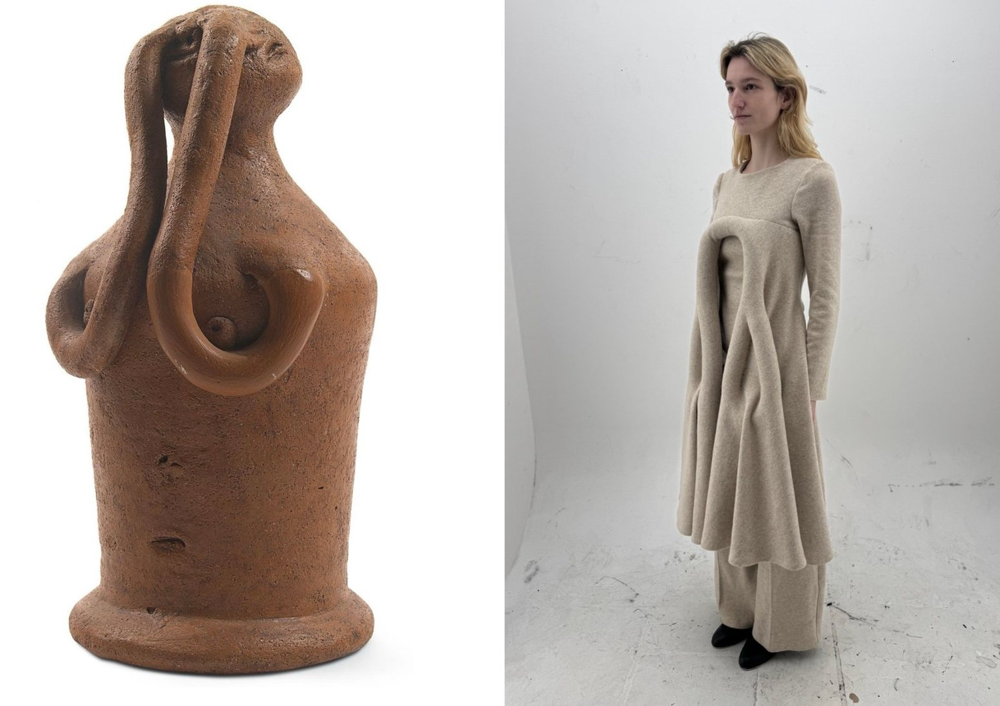
陶像 → 胸前的卷 他的线 保留「人像身上的形，搬到穿的人身上同一处 」原理 —— 三对图都在。
图：1 Granary《CSM MA 2026》（2026.2.19），过程图随文发布｜理念据同文，教师翻译｜仅课堂研究使用
第1课时｜45分钟
女装设计 · 第04周
12 案例② Ivan Delogu Senes · 上台
上台时，三对图变成了三套 据报道（教师译）：体积悬垂、形成空腔、压向身体 ，躯干、腹部、臀部、骨盆是「承受」的部位。
底部最重 台上：黑裙两侧的圆卷垂到小腿。手抱住身体 台上：白色毛边的手形贴满前身。腹部的卷 台上：米色长衣在腹部下沉、凹进去。你看见的｜石像、版画、陶器——来源三样，做的是同一件事 。来源可以散，线不能散。
图：1 Granary《CSM MA 2026》（2026.2.19），过程图随文发布｜理念据同文，教师翻译｜仅课堂研究使用
第1课时｜45分钟
女装设计 · 第04周
13 案例③ Zeina Issa · 板
三对照片，左老右新：金属都挂在身上 每一页左边是老照片或旧物，右边是她自己或模特。硬币和链子从腰、脸挂到头 。
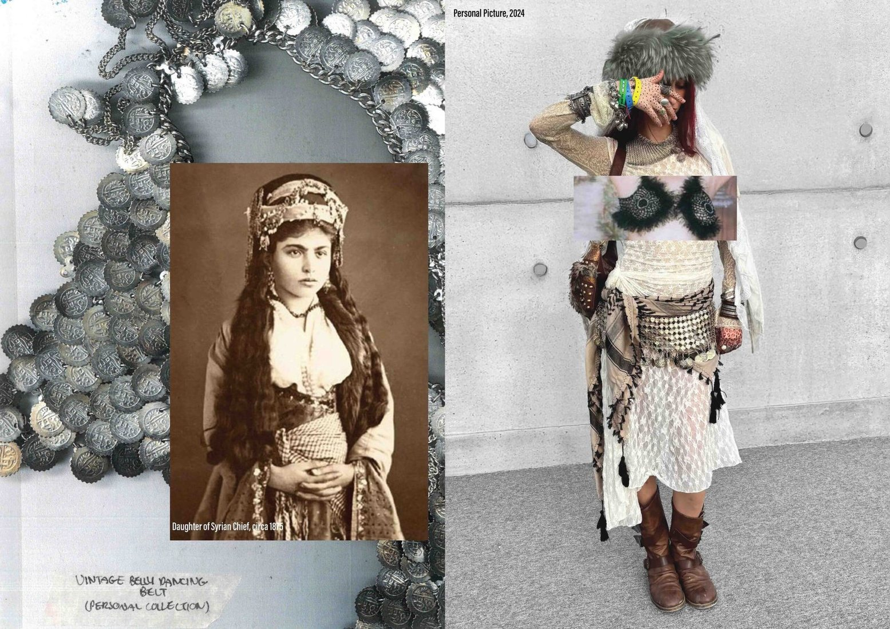
腰 Personal Picture, 2024 ）。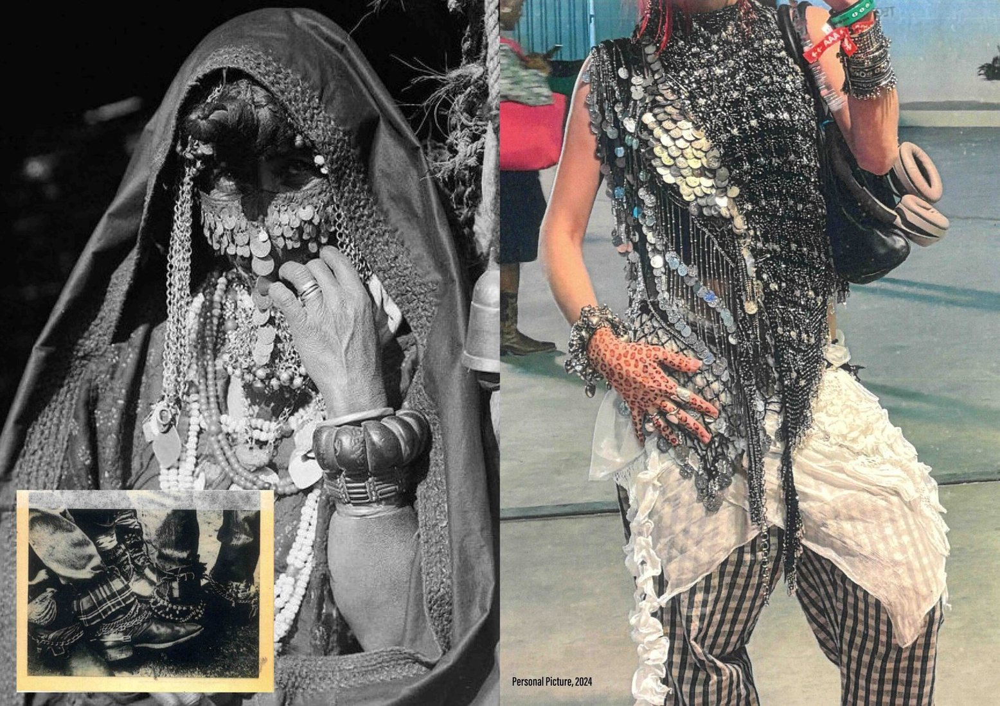
脸与身体 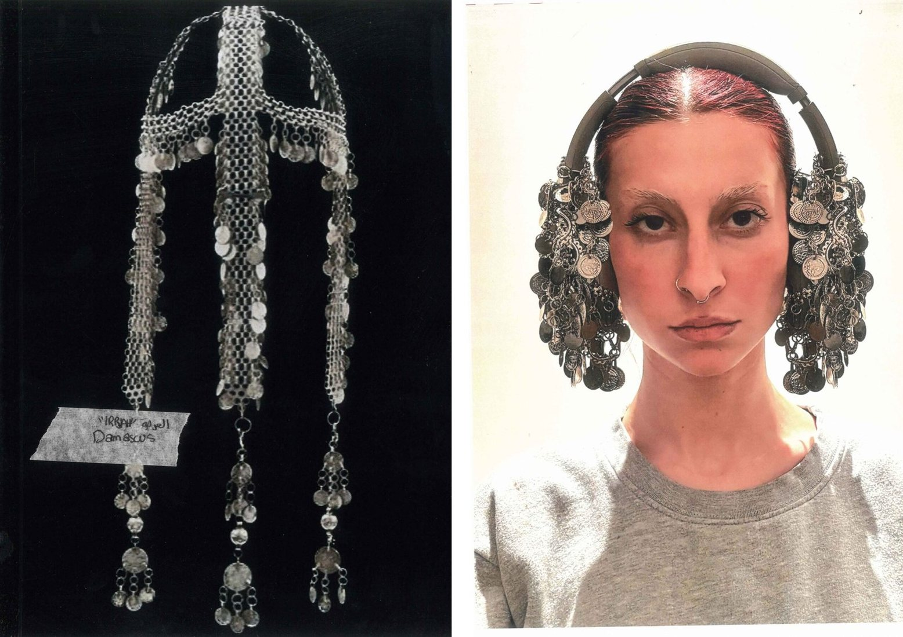
头 她的线 保留「金属挂在身上，一走就响 」原理 —— 腰、脸、头，三格都在。
图：1 Granary《CSM MA 2026》（2026.2.19），过程图随文发布｜理念据同文，教师翻译｜仅课堂研究使用
第1课时｜45分钟
女装设计 · 第04周
14 案例③ Zeina Issa · 做出来
从一条旧腰带，到墙上的十四套，到台上 线定了以后，每一步都在做同一件事：拆、排、上台 。
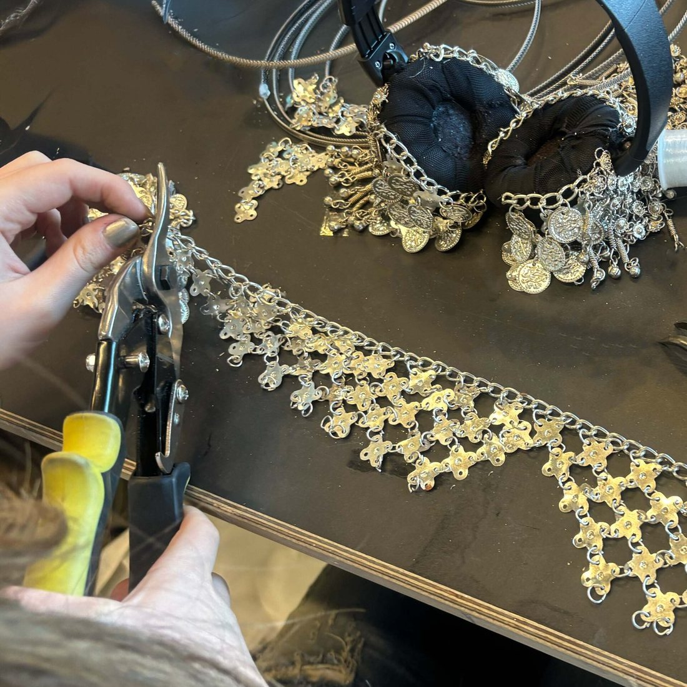
① 拆 把回收的二手肚皮舞腰带剪开，重新连接。→ 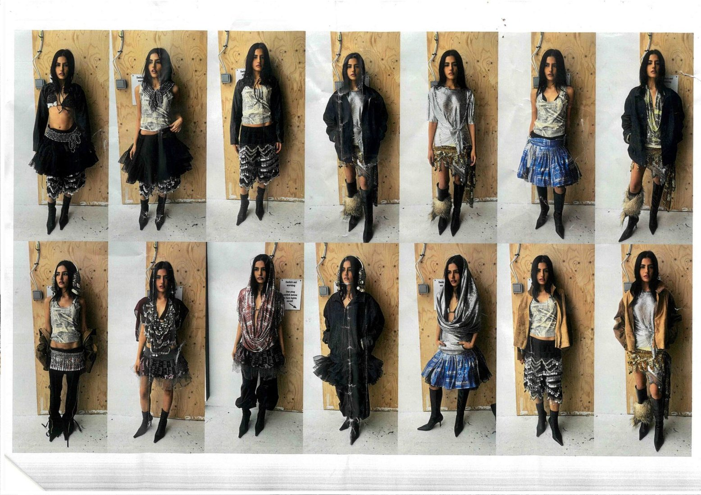
② 排 十四套试穿照贴上墙，一起看，一起减。→ 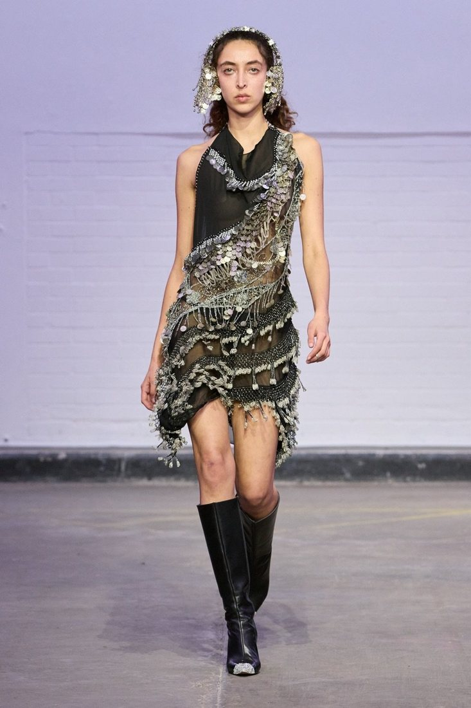
③ 上台 金属片斜挂过前身。→ 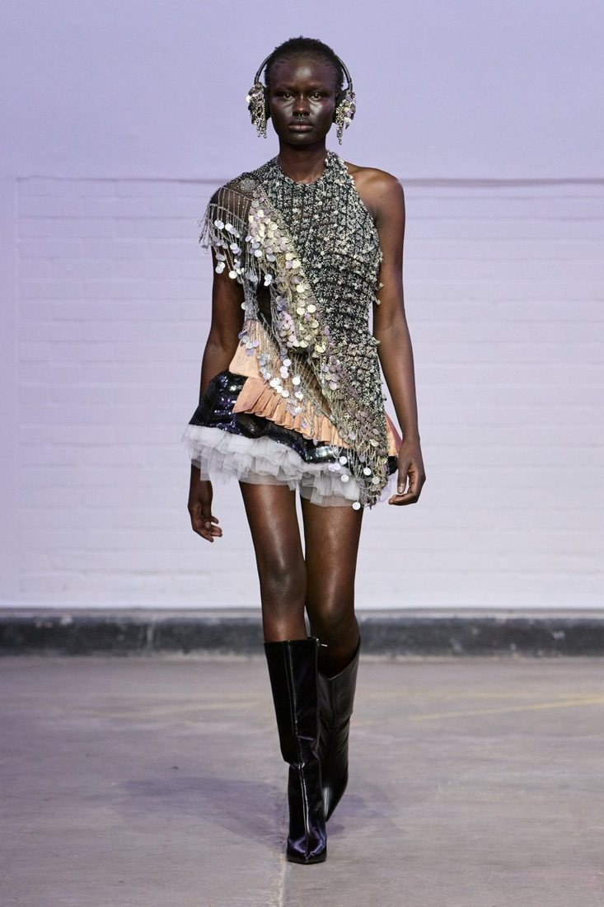
③ 上台 金属片从肩挂到下摆。据报道｜回收的肚皮舞腰带把声音和动作 放进衣服里。——她的线，一直走到了成衣。
图：1 Granary《CSM MA 2026》（2026.2.19），过程图随文发布｜理念据同文，教师翻译｜仅课堂研究使用
第1课时｜45分钟
女装设计 · 第04周
15 三个人，三条线
三条线，都能写成一句「保留___原理」 线可以是一个做法 、一类来源 、一样东西 。共同点只有一个：好几格里都在 。
Yulu Hou｜做法 保留「制服部件换位置，原结构不拆 」原理
板上四页 · 头、袖、身前、手
Ivan Delogu Senes｜来源 保留「人像身上的形，搬到穿的人身上同一处 」原理
板上三对 · 下摆、前身、胸前
Zeina Issa｜东西 保留「金属挂在身上，一走就响 」原理
板上三对 · 腰、脸、头 轮到你｜在自己的 27 格里找：哪样东西在 ≥3 格、跨 ≥2 行里都在？ 写成「保留___原理」——这就是今天第3步。
图：1 Granary《LCF MA Fashion 2026》（Yulu Hou，2026.2.21）、《CSM MA 2026》（另两位，2026.2.19），过程图随文发布｜仅课堂研究使用
第1课时｜45分钟
女装设计 · 第04周
16 主题板｜七步总览
31分钟：七步做完，A3 第一张就成形了 今天不是「回去慢慢做」。每一步的材料，上周都已经带来了；每一步都有一个完成信号 ——信号没出来，就别进下一步。
1 画格子 3分钟
2 取料 4分钟
3 连一条线 7分钟
4 减到 8—12 张 4分钟
5 编号与一行注 5分钟
6 画因果线 3分钟
7 写概念句 45 字 5分钟
人物 场景 概念句 问题 形式 时事 落选区 保留「抬腿让开、放下回来」原理 1 2 3 4 5 6 7 8 9 10 做 卡 答 ①/③/⑤/⑧ 七步做完，A3 第一张就是这样：五块 各有 1—3 张已编号的图，形式块 中间是那一条线，块与块之间有因果线 ，右上角是概念句 ，底下是落选区 。
课堂输出：主题板 1 页（8—12 张已编号资料 ＋ 一行注 ＋ 因果线 ＋ 右上角 45 字概念句），落选区留在板上。
第1课时｜45分钟
女装设计 · 第04周
17 主题板 步骤1｜画格子
3分钟：先把 A3 分成五块，一张图都还不要贴 板面先有结构，再有图。反过来做，图会替你决定结构——那就又变回拼贴了。
拿出 A3 横版 1 张、铅笔。
第02周那张 A3 放在手边，第7步 要用。
做 用铅笔把 A3 分成五块，写上层名：人物、场景、问题、形式、时事 。大小不必相等——你打算往哪块放几张，那块就画多大。 右上角留一块空白，标「概念句 」。那里第7步写 45 字，现在不写。 沿右边或下边留一条窄条，标「落选区 」。第4步淘汰下来的放这里，不扔 。第03周第20页③：作品集留不下被放弃的方案，所以你的板面要留下。 放在哪 人物 场景 概念句 问题 形式 时事 落选区
五块的位置你自己定。
只有一条硬要求：人物和场景要挨着 ——第6步要在它们之间画线。
容易做错 先贴图再分块。图一贴死，格子就只能迁就图——这正是拼贴的做法。
完成信号：站到 3 米外 ，五块的分界还看得见。
第1课时｜45分钟
女装设计 · 第04周
18 主题板 步骤2｜取料
4分钟：把上周带来的八格证据，按层摊在桌上 今天不产生新材料。五块里的每一块，上周都已经有东西可以放进去了。
拿出 第03周八格证据 全部。
第02周那张 A3。
第03周不单独提交，所以原件都在你手上。
做 人物 块 ← 人物句（第03周第14页） ＋自穿记录·观察速写（第03周第25页） 。场景 块和问题 块 ← 四句链里的事实句、身体句、问题句（第03周第14页） 。一句一块，别都堆在一起。时事 块 ← 当季趋势 1 条：5 个品牌里重复的一件事（第03周第25页） 。这一块必须带来源卡——第03周附录 A11「出处两级制」。 形式 块 ← 发散板 27 格（第03周第22、25页） ＋ 20 张已标注图。这一块下一步才收，现在只是把料放过去。放在哪 人物 场景 概念句 问题 形式 时事 落选区
纸片先放在桌上 ，不要贴到 A3 上。
第4步要淘汰一半，贴早了撕不下来。
容易做错 某一块空着就跳过去。空的那块不会自己补上——它是今天最该先解决的。
完成信号：五块都有东西，一块也没空 。空着的那块，你现在就知道缺的是哪一样。
第1课时｜45分钟
女装设计 · 第04周
19 主题板 步骤3｜连一条线（上）划格
7分钟·先划格：27 格逐格问三句，答不上来的划一道横线 拿出发散板 27 格（第03周第22、25页） 和第03周第14页那四句话。不画新图。
能退回去吗 第03周第09页 第①关 指得回你的摩擦证据（四句链）吗？
说得出部位吗 第②关 它改的是哪一轴、哪一层？
下周能验证吗 本周加的 样布、元素图、款式图，用得上一样吗？
不擦
只带了 9 格的人 ：先在 9 格里划，线穿 ≥3 格 就算；另外 18 格第05周前补。
完成信号：格里有划掉的，也有留下的。一格都没划？回去看第①问。
第1课时｜45分钟
女装设计 · 第04周
20 主题板 步骤3｜连一条线（下）连线
再连线：在留下的格里找重复的做法，彩笔连起来 线索在每一行末尾那句「保留___原理」里——三张板共九句，找重复的。教师示例｜种子：下摆到膝下收口
略微 明显 极端 换材料 换身体·动作 换场合·时间 … 膝下一圈罗纹：抬 腿拉开、放下弹回 硬纱撑成伞形 侧缝开衩：上台阶 时跟着腿打开 … … … … 雨天通学：下摆整 圈扣起到膝上 三格重复的是下摆抬腿时让开，放下时回来
放在哪 这条线写进「形式」块正中 ：下摆抬腿让开、放下回来 原理，换成___，用在___。线上三格缩印在旁边。
容易做错 只圈一格；或者三格都在同一行——那是一件衣服的三个版本。
完成信号：一条彩笔线穿过 ≥3 格、跨 ≥2 行 ；「保留___原理」里填的是部位＋动作，不是形容词。
课后查阅｜教学补充
女装设计 · 第04周
A11 步骤3｜对照
这四种，都不算一条线 第3步连不出线的时候，先对照这一页。
白 · 白 · 白 ✗ “都是白色／都很简约” 只有颜色或感觉，画不成一条结构线（第03周第11页）。
✗ “都在腰上” 只有部位，没有做法。说得出“腰上怎样”才算。
✗ 三格都在同一行 同一个“换成”的三种程度——还是一件衣服的三个版本。
✗ “这一格最好看” 又回到了一格。
线 ≠ 种子｜种子是出发时的一个决定；线是 27 格走完，还留得住的那个做法 。不一样更好——说明你真的发散过。
第1课时｜45分钟
女装设计 · 第04周
21 主题板 步骤4｜减到 8—12 张
4分钟：从 20 张减到 8—12 张，减下来的不扔 判断只有一句：拿掉这张，你的设计决定会不会变？ 不变的，它就只是装饰资料。
拿出 桌上五块的全部候选。
第03周那 20 张已标注图。
做 一块一块来。每块先留 1 张最硬的 ——你能立刻说出它改变了什么的那张。 再问第二张：拿掉它，决定会变吗？ 会变就留，不变就移到落选区。每块最多 3 张。 五块加起来数一次：少于 8 张，回头看哪块只有一张；多于 12 张，回到第 2 问再删一轮。 落选区的纸片按块排好 ，不要叠在一起——同伴讲评时别人会问「你删掉了什么」。第03周第20页③原话：被放弃的方案大多不进作品集，所以你的板面要留下划掉的格 。 放在哪 人物 场景 概念句 问题 形式 时事 落选区 保留「抬腿让开、放下回来」原理 留下的先用回形针别 在 A3 上。
还不要贴死——第5步要重新排位置。
容易做错 舍不得删，二十张全贴上去。那不是主题板——附录「板的职责」页说的「图之间没有关系」的拼贴，就是这么来的。
完成信号：8—12 张；每块至少 1 张、最多 3 张 ；落选区至少 3 张 。
课后查阅｜教学补充
女装设计 · 第04周
A12 落选也留在板上
别人的板怎么留下「删掉了什么」 第4步说「减下来的不扔」。这是一张真的这样做了的板。
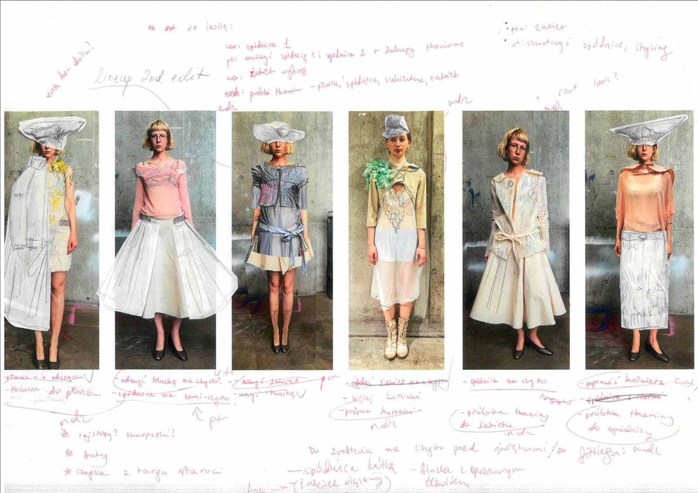
“lineup 2nd edit”：第二次编辑。要改的、划掉的、下一步，直接用粉色笔写在板上 。Pola Wislicz｜学生作品 划掉的东西说明你决定不做什么 ——同伴讲评时别人会问「你删掉了什么」。
你的落选区：按块排好，不叠在一起。
图：1 Granary《CSM MA 2026》（2026.2.19），过程图随文发布｜理念据同文，教师翻译｜仅课堂研究使用
第1课时｜45分钟
女装设计 · 第04周
22 主题板 步骤5｜编号与一行注
5分钟：每张图给一个号，每张图写一行注 编号不是装饰。第2课时填任务书时，八项后面要写的就是这些号——指不到号的图，等于没用上。
拿出 别在 A3 上的 8—12 张。
第03周的来源卡与一行出处。
做 从人物块开始顺时针编号 ①②③…，号写在图的左上角 ，不要写在图上。 每张写一行，三样缺一不可：答哪一层 ／ 拿掉它什么会变 ／ 出处 。 出处照第03周附录 A11「出处两级制」：两条核心证据写完整来源卡，其余每张一行——品牌／季度／来源网站。 写不出出处的，现在移到落选区。一行出处现在能写出品牌和网站两样就算；季度回家补。 第03周附录 A11 原话：「没有这一行的图，不能进板面。」 放在哪 人物 场景 概念句 问题 形式 时事 落选区 保留「抬腿让开、放下回来」原理 1 2 3 4 5 6 7 8 9 10 一行注写在图的正下方。
写不下就写在便签上贴在图边——别写到别的块里去。
容易做错 把「这张很有感觉」当成一行注。那句话拿掉，什么都不会变——所以它不是注，是形容词。
完成信号：没有号的图 0 张 ，没有出处的图 0 张 。
笔记②｜证据位置 两条核心证据的编号与出处，抄进本周笔记第②栏（第03周第23页） 。
第1课时｜45分钟
女装设计 · 第04周
23 主题板 步骤6｜画因果线
3分钟：在五块之间画线，每条线上写一个动词 学习目标里那条「建立 1 条因果线」就是这一步。五块各自成立不算数，要能从任一形式追回到来源 。第3步那条线在形式块里面 ；这一步的线画在块与块之间 ——两种线别混。
做 人物 → 场景：线上写她做什么动作 。 场景 → 问题：线上写在哪里卡住 。 问题 → 形式：线上写你用什么回答 。 时事不进这条链。用一条虚线指向问题，线上写为什么是今天 ——例：「长裙回潮 → 缠鞋跟变多」。 放在哪 人物 场景 概念句 问题 形式 时事 落选区 保留「抬腿让开、放下回来」原理 1 2 3 4 5 6 7 8 9 10 做 卡 答 线画在块与块之间的空白上。
看起来乱，说明第1步格子分得不好——这时候改格子，不要改线 。
容易做错 把线画成装饰性的曲线和箭头。线上没有动词的线，跟没画一样。
完成信号：随手指一张形式块的图，你能沿着线一路说回人物块，中间不跳 。
第1课时｜45分钟
女装设计 · 第04周
24 主题板 步骤7｜写概念句 45 字
5分钟：把整块板压成一句 45 字——立场句的第四次升级 第01周写身体关系，第02周写结构线，第03周写因果句。今天压成一句能指导设计的话。
拿出 第02周那张 A3（立场句）。
第03周第04页那个第三级句子。
做 照句式填：为［对象］，在［情境］中，通过［形式／材料策略］解决［核心矛盾］。 对象来自人物块，情境来自场景块，矛盾来自问题块，策略来自第3步连出的那一条线。四样都要能指到图的编号。 数字数：只数汉字和数字，标点不算 。超过 45 字，删的是形容词，不是四样里的任何一样 。 写进右上角那块空白。 放在哪 人物 场景 概念句 问题 形式 时事 落选区 保留「抬腿让开、放下回来」原理 1 2 3 4 5 6 7 8 9 10 做 卡 答 ①/③/⑤/⑧ 右上角。
句子下面用小字写四个编号，例如
容易做错 写成「概念句」页上那句空泛句的样子——三个形容词，一个决定也做不出来。
完成信号：删掉句子里任何一个词 ，设计的意思都会变。
笔记①｜判断句 概念句抄进本周笔记第①栏。禁用词出现一次，该句不计 （第03周第14页） 。
第2课时｜45分钟
女装设计 · 第04周
第2课时｜45分钟
从“有方向”进入“做承诺” 第二课时：设计任务书要让下一周的元素提取有明确边界。
课后查阅｜教学补充
女装设计 · 第04周
A13 设计密码
设计密码不是复制一个符号 设计密码＝风格，概念句＝主题，任务书的「形」是两者的结合 （大纲第三章第三节）。设计密码必须可以在不同造型中改变强度。
装饰符号 检验： 把这个图案从五套里全部删掉——系列还认得出来吗？还认得出，说明它只是装饰。
设计规则 重复同一比例关系 改变固定点与释放方向 在不同产品中保留可识别原理 检验： 换一个品类（外套换成裙装），这条规则还生成得出东西吗？
例： 不是“每套都放一朵花”，而是“上窄下放一比三”的比例关系——在外套上是肩到腰，在裙装上是腰到摆。同一条规则，两种产品，强度还可以分配。 写法 把设计密码写成一句可执行的话：保留什么关系、允许改什么、在哪里可以放大。
课后查阅｜教学补充
女装设计 · 第04周
A14 视觉转译 C
Area 2026秋冬｜同一垂挂规则如何进入五种产品角色 以垂挂线性装饰为共同设计密码，比较裙装、针织与分体造型如何调整密度、重量、身体暴露与活动范围。
Area 2026秋冬 · Vogue Runway 同一季5套：长度／密度／覆盖位置变化
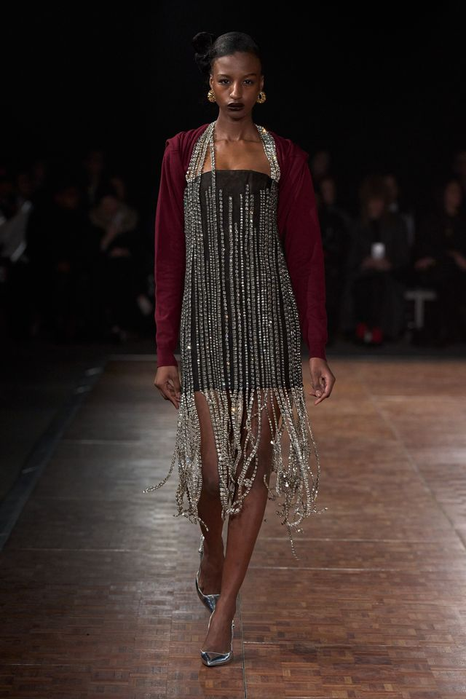
01 透明层次 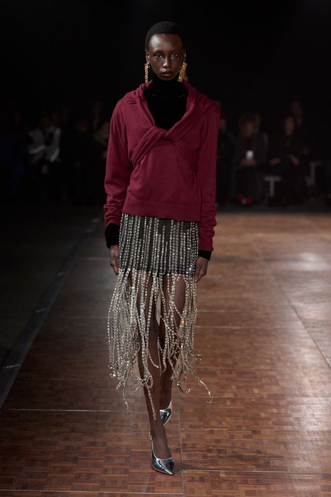
02 线性垂挂 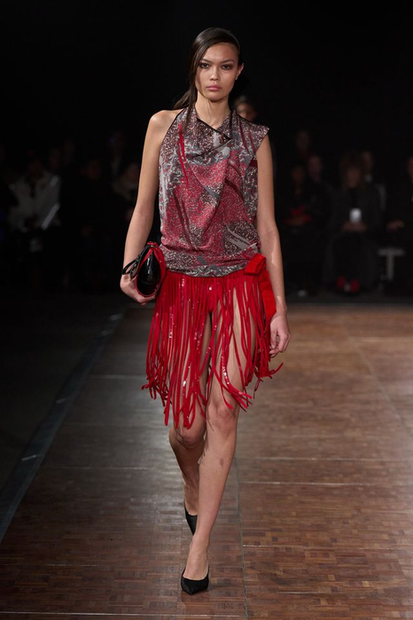
03 动态流苏 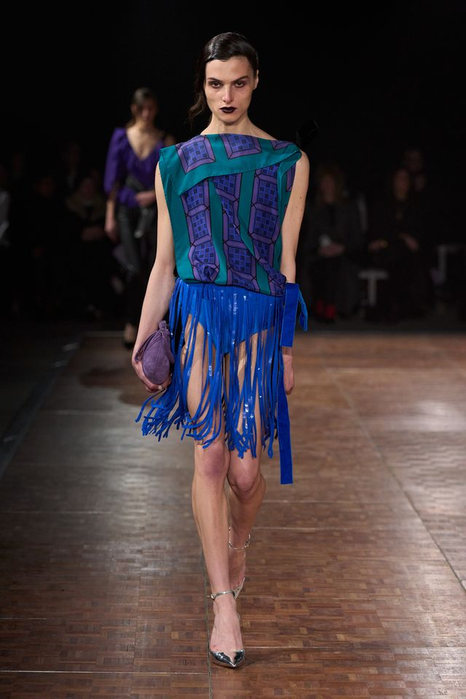
04 色彩扩张 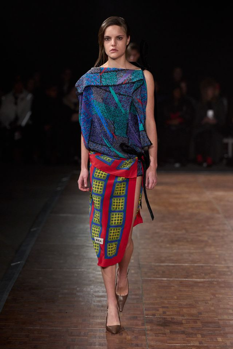
05 分体转译 保持： 垂挂线性装饰、局部透明与身体周围的动态边缘。
变化： 密度、长度、覆盖位置与产品角色；同时检查重量、工时和活动限制。
图源：Area 2026秋冬成衣｜Vogue Runway｜用途：仅用于同一设计密码进入五种产品角色的比较
第2课时｜45分钟
女装设计 · 第04周
26 开发边界
四条边界必须同时写出“允许、排除、验证” 继续用「主题板结构」页那个例子（早课 8:40 的楼梯）；以下是写法示范，学生必须替换为自己的决定。
第2课时节奏 边界＋Gate预告 7′ 实操五步 26′ 同伴讲评 8′ 评价与收尾 4′
边界
允许
排除
验证证据
01 产品
半裙、连衣裙与可搭配的上衣，共同组成 5 套通学场合女装方向。
本阶段不扩展外套、运动装或配饰线。
每个品类出 1 张款式图，并标出下摆怎样处理「要收↔要放」。
02 身体
自身站姿、抬臂、坐姿照片各 1 张，共 3 张，另附 1∶2 比例稿。
本课不用人台 ；没有比例核对证据时，不宣称适配所有体型。
关键部位标注活动量。
03 材料
棉布为主，加弹力罗纹与针织（第3步连出的「膝下一圈罗纹」）；主材料控制在 3 类以内。
排除课程周期内无法取得、无法打样的特殊材料。
提交10—20cm样布3块，记录垂坠、透明、厚度与手感。
04 制作
使用现有工具与技能，先完成局部实验和 1∶2 比例稿。
排除超出时间、设备、技能或成本上限的工艺承诺。
列出工序、失败风险、所需时间与下一次检查节点。
第2课时｜45分钟
女装设计 · 第04周
27 Gate 1预告
先知道终点：最后只需要证明五件事 本页不是立即评审，而是告诉你下一课堂实操的初稿必须准备哪些证据。
01
证据是什么？ 人物、场景与时事资料是否可靠，并能追溯来源？
02
问题是什么？ 需要由服装而不是口号解决的核心矛盾是什么？
03
规则是什么？ 哪些轮廓、材料或结构关系将在5套中重复出现？
04
边界是什么？ 本阶段允许、排除什么，理由和资源限制是什么？
05
如何验证？ 下周用元素图、样布或款式图中的哪一种检查成立？
固定句式 “我的证据证明＿＿；因此承诺通过＿＿规则解决＿＿；目前最大风险是＿＿；下一步用＿＿验证。”
第2课时｜45分钟
女装设计 · 第04周
28 设计任务书｜五步总览
26分钟：把主题板变成一份别人能逐条查的承诺 主题板说的是「我看到了什么」，任务书说的是「所以我做什么」。下面五步，每一步都要能指回板上的编号 。
8 填八项 8分钟
9 写四条边界 8分钟
10 材料护照 4分钟
11 一项验证任务 3分钟
12 四项自检 3分钟
课堂输出：任务书初稿 1 页（八项＋证据编号 ＋ 四条边界 ＋ 1 项验证任务）＋ 材料护照 ＋ 自检表打勾。
第2课时｜45分钟
女装设计 · 第04周
29 设计任务书
一份可执行任务书至少回答八个问题 不能回答的部分，就是下一步研究任务。
第2课时｜45分钟
女装设计 · 第04周
30 任务书 步骤8｜填八项
8分钟：八项逐条作答，每项后面写证据编号 主题板说「我看到了什么」，任务书说「所以我做什么」。每一项都要能指回板上的号。
做 按顺序填 人·场·题·品·形·材·责·验 。一项一句，不写段落。 每项后面写编号，例如「人 ← ①③」。指不到编号的项，说明板上缺证据 ——那一项写「待验证」，不要编。 「题」直接抄概念句里矛盾那半句，不要重写 。 「形」＝你的风格 检验语（第03周第06页） ：在___↔___轴上取___一侧，用___实现。 轴用三轴：贴合↔离体、支撑↔垂坠、暴露↔覆盖（第01周第12页）。写不出这一句的，「形」还是标签，不是风格。 「责」不是口号：写你排除了哪种材料或做法，以及为什么 。 放在哪 A3 第二张，左半页 。
右半页留给第9步的四条边界。
容易做错 「责」写成「环保、可持续」。那是标签。附录「材料与责任」页说的是：责任是一条能被验证的决策链。
完成信号：八项都能用一句话朗读，而且每项后面都有编号或者「待验证」。
第2课时｜45分钟
女装设计 · 第04周
31 任务书 步骤9｜写四条边界
8分钟：四条边界，每条同时写出「允许、排除、验证」 三段缺一条就不是边界。只写允许，边界会一直放宽；只写排除，指导不了正向决定。
拿出 「开发边界」页的写法示范。
那是示范不是答案，必须换成你自己的决定。
做 产品 ：做几套、哪些品类、不扩到哪里去。身体 ：本课不用人台 ，一律用你自己的动作照片——站姿、抬臂、坐姿各 1 张，共 3 张，再加 1∶2 比例稿。第03周附录 A04：「本周不做访谈；第04周再加自身动作照 、影像帧对照、图纸标线。」就是现在。 材料 ：主材料控制在几类；排除课程周期内拿不到、打不了样的。制作 ：现有工具和技能做得到的；排除超出时间、设备、成本上限的。放在哪 A3 第二张右半页 。
四行三列：边界／允许／排除／验证。
容易做错 排除栏空着。今天的难点就在这里——不写排除什么，下周没法开始提取元素。
完成信号：四条的排除栏都填了 ，而且排除的理由是资源或时间，不是「不喜欢」。
第2课时｜45分钟
女装设计 · 第04周
32 任务书 步骤10｜材料护照
4分钟：三块样布——这是你这一周唯一的实物证据 任务书里的「材」和第9步材料边界的「验证」，靠的都是它。没有样布，材料那一栏只是打算。
拿出 第03周带来的实物 ≥2 件。
手边能拿到的布。
做 取 10—20cm 见方的样布 3 块 。课上拿不到就先贴替代品并写「待换」。 每块记四样：垂坠、透明、厚度、手感 。用手试，不抄网店描述。 来源照片 1 组：布从哪里来。第03周附录 A11 那一行出处同样适用。 写一句使用与修补方案：坏了怎么办，剩料怎么办。 放在哪 拍成 1 页，放进任务书 PDF 的第 3 页 。
样布实物第05周带来。
容易做错 记成「手感很好」。好不好不是物性。写「比棉布硬，折过来会立住」才是能被别人核对的。
完成信号：3 块样布 ＋ 四样物性记录 ＋ 来源 ＋ 一句修补方案。
第2课时｜45分钟
女装设计 · 第04周
33 任务书 步骤11｜一项验证任务
3分钟：写下你下周第一件要做的事 上周看的《有无相生》七格证据链（第03周第07页） ，公开页面上「验证／修正」那一格是空的。Gate 1 查的就是这一格：你怎么知道这个方向行得通？
做 从四条边界的「验证」栏里挑一条 ——下周第一件要做的。 写成三样：做什么 ／ 用什么做 ／ 什么算通过 。 挑不出来就挑风险最大的那条。风险最大的定义：它不成立，整块板都得重做。 放在哪 任务书最后一行，单独一行：
「下周先验证：____」
容易做错 写「下周继续完善」。那不是验证任务，那是还没决定。
完成信号：这一句里有动作、工具、通过标准 。三样缺一样，下周就做不了。
笔记③｜下一步动作 把这一句原样抄进本周笔记第③栏：「下周之前我要核对：______。」（第03周第25页）
第2课时｜45分钟
女装设计 · 第04周
34 任务书 步骤12｜四项自检
3分钟：四项打勾——过不了的，现在就知道要补什么 「Gate 1 预告」页那五问是准备清单 ；这里的四项才是当场评定 的。
拿出 主题板、任务书。
「Gate 1 预告」页那个固定句式。
做 一致 （5分）← 第03周第09页第④关·有立场 ：人物、时事、主题和形式规则互相支持吗？——沿第6步那几条线走一遍，终点是第7步那句概念句。具体 （5分）← 第②关·有身体落点 ：说得出部位与轴 吗？——看第8步「形」那一句检验语。有限 （5分）：四条边界的排除栏都填了 （第9步），而且发散板上有划掉的格（第3步）——发散过（第③关），才谈得上收窄。可追溯 （通过性条件）← 第①关·有摩擦证据 ：图片、数据与观察记录的来源完整吗？——看第5步那一行出处。放在哪 自检表上打勾。
没打上勾的那一项旁边，写补救动作和时间 。
今天是预评，过不了不扣分；第05周交的那一版才计入平时作业 1。
容易做错 四项全打勾，可追溯那项其实缺来源。这一项不满，其余三项不计 ——它是通过性条件，不是分数。
完成信号：四项都有勾；有一项没勾的，旁边写着「什么时候补、怎么补」。
第2课时｜45分钟
女装设计 · 第04周
35 同伴讲评
8分钟四人小组｜每人1分钟说明 + 1分钟反馈 评论不讨论个人喜好，只帮助对方做出下一次可执行修改。
四人并行流程 01 说明者用“Gate 1预告”页的固定句式讲60秒，最后自己说一句「我保留___」。
02 三位听者各认一个角色：A 删除 · B 补证 · C 验证 ，只记自己那一类，不打断。
03 60秒反馈：A、B、C 各 20 秒，各说一条。
04 说明者圈出最先执行的两项。换人，角色顺移。
验证｜C 下周应先用元素图、样布还是款式图证明规则？
每位学生带走 保留1项（自己说）+ 删除·补证·验证各1项（A·B·C 各给一条），并圈定最先执行的2项修改。 每条意见仍要写成「部位＋方向」 ——“下摆更长、侧缝开衩”才算意见，缺一个不算（第03周第23页） 。
课后查阅｜教学补充
女装设计 · 第04周
A15 期末评价连接
本周成果将进入同一套六项终期评价 平时训练不是零散作业，而是期末系列的证据积累；本页依据《25级〈女装设计〉考核大纲》期末实践考试评分标准（满分100分）。
10分
时代性与创意 主题回应当下，并形成自己的问题与立场。
10分
趋势性与元素 提炼的设计元素与当季趋势、审美和来源一致。
20分
当代女性适配 款式回应身体、动作、场景与真实穿着需求。
20分
整体造型美感 比例、色彩、材料与细节共同形成完整造型。
20分
市场与定位 顾客、价格、品类和使用情境边界清楚。
20分
统一与丰富 风格统一，同时具有角色、搭配与造型变化。
第2课时｜45分钟
女装设计 · 第04周
36 形成性评价
Gate 1：能否安全进入元素提取 这 15 分＝平时作业 1（主题板＋任务书，15 分）的评分标准 ，第05周提交时计分。今天课上是预评：未通过不扣分 ，补齐后再交。
✓
一致・5分 人物、时事、主题和形式规则互相支持。
→ 期末｜时代性与创意 10分 ✓
具体・5分 标准可通过图纸、材料或款式图检查。
→ 期末｜当代女性适配 20分 ✓
有限・5分 四条边界的排除栏都填了（第9步），发散板上有划掉的格（第3步）。
→ 期末｜市场与定位 20分 ✓
可追溯 图片、数据与观察记录来源完整。
→ 课程通过性条件；无来源即 Gate 1 不通过 本周不评 趋势性与元素、整体造型美感、统一与丰富——共 50 分自第05周起逐周累积。
第2课时｜45分钟
女装设计 · 第04周
37 下周准备
第05周：从主题证据中提取元素 不要先画完整款式。
本周提交规格 ① 一个 PDF（300dpi），文件名 W04_学号_姓名.pdf：A3 横版 2 张 （主题板 8—12 张已编号资料；任务书八项 ＋ 证据编号 ＋ 四条边界 ＋ 1 项验证任务）＋ 材料护照 1 页 （3 块样布照片 ＋ 四样物性）；第05周第1课时前经课程群提交，纸质稿到堂。 ② 概念句 写在主题板右上角，45 字以内。 ③ 不交、但带到第05周：自检表、课堂修正稿、样布实物 3 块。
第2课时｜45分钟
女装设计 · 第04周
一句话小结：任务书是一份可检查的承诺 “我的主题板证明 ______；因此任务书承诺通过 ______ 的形式规则，为 ______ 穿着者解决 ______。第05周我要先从这条规则里提取 ______ 作为可变形的元素。我拒绝 ______。 ”
交 主题板 1 页 ＋ 任务书 1 页 ＋ 材料护照 1 页（一个 PDF）
带 Gate 1 自检表 ＋ 样布实物 3 块
想 第05周待提取元素 1 项（写进上面这句）
课堂 全部
← →